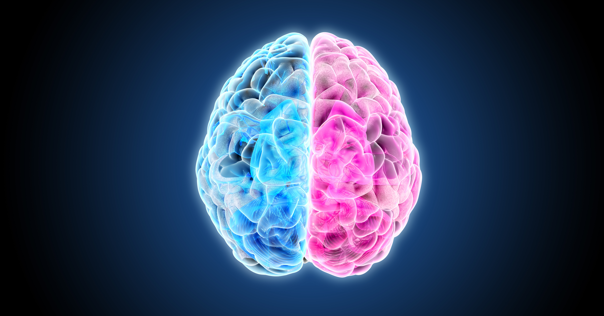
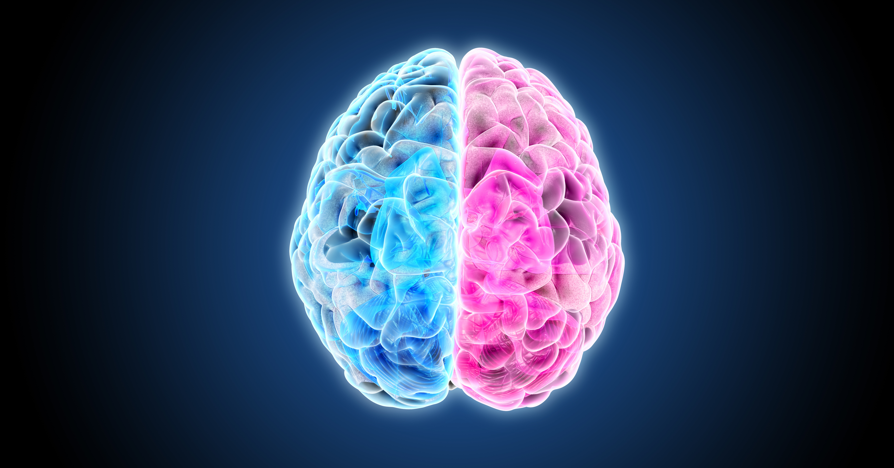
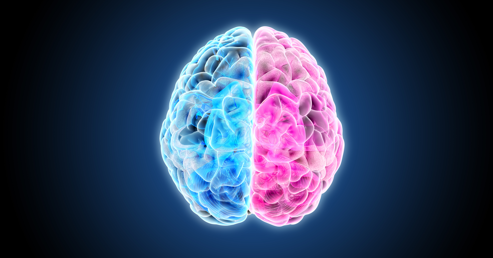
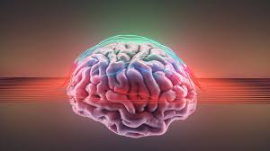
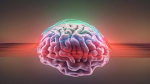

eurokonce is te vity of the servosledng the brain, spinal cord, and peripheral nerves. I encompasses a wide range of decesuding gehogs and Understanding brae tudo essere raving the mysteries of human behavior, cognition, and emotion.
The human bran annowitly comples organ consisting of approximately billkon neurone that communicate through brillions of synapses is respositie bro house and reverents making to stance The brain divided into various regions, each responsible for specific functions. For instance, the centrum, theo largest part of the brain
congestive lunctiora suchong problem shing, and decision-making Meanwhile, the cerebellum plays a critical role in coordinating movement and balance highlighting the inttricate specialization whithin this remarkable orgen.

Neuropiasticity refers to the brain's ability to adapt and reorganize itself in response to experiences, learning, and injury. This remarkable property allows the brain to form new neural connections throughout life, enabling recovery from trauma and adaptation to new environments
Mustralion of neuroplastioily in the brain
 

Mental health is a crucial aspect of overall well-being, affecting how we think, feel, and act. It also plays a significant role in how we handle stress, relate to others, and make choices. Mental health conditions, such as depression and anxiety, can impact anyone, regardless of age or background
Maintaining good mental health is essential for a fulfilling life. Here are some key points about mental health:
Importance of mental heath in our lives.

| Function | Description | Importance |
|---|---|---|
| Cognition | The mental action of acquiring knowledge and understanding. | Critical for decision-making and problem-solving. |
| Emotion Regulation | The ability to manage and respond to emotional experiences. | Essential for mental health and social interactions. |
| Memory | The process of encoding, storing and retrieving information. | Vital for learning and adapting to new situations. |
| Motor Control | The coordination of muscle movements. | Necessary for physical activity and coordination. |
The human brain is a remarkable organ with incredible capabilities. Understanding its functions and the importance of mental health is crucial for personal well-being and societal progress. As we continue to explore the complexities of the brain, we can unlock new potential for treatment and enhance our quality of life
Brain Conclution
A summary of brain functions and their importance
© 2024 The Human Brain
For more viformation on neuroscience, visit BrainFacts.org